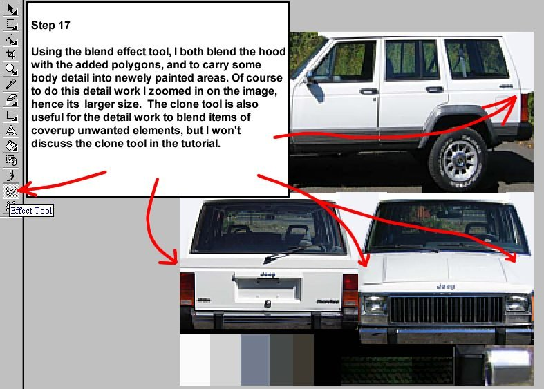
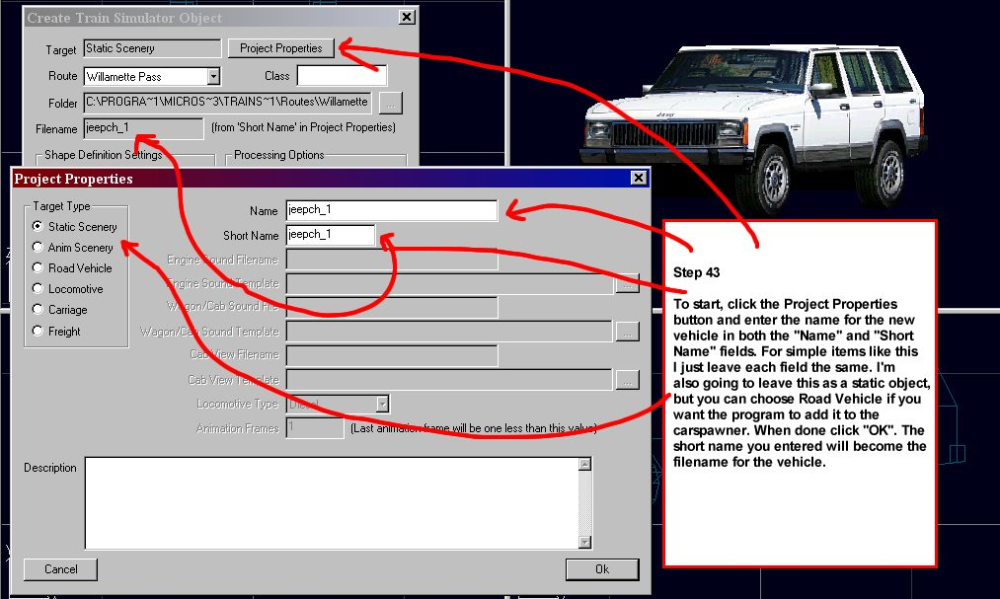

Creating a vehicle for MSTS using Train Sim Modeler
by Ted "Funnelfan" Curphey
This photo-tutorial shows you how to create a vehicle for MSTS using Train Sim modeler. This tutorial will cover the whole process from collecting photos and making a texture, to making the model and exporting it to MSTS. I made this tutorial because I've seen people struggling to make models, not realising there are simple methods to fix or avoid common mistakes.



